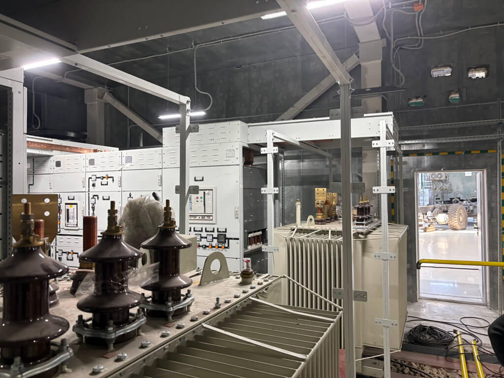
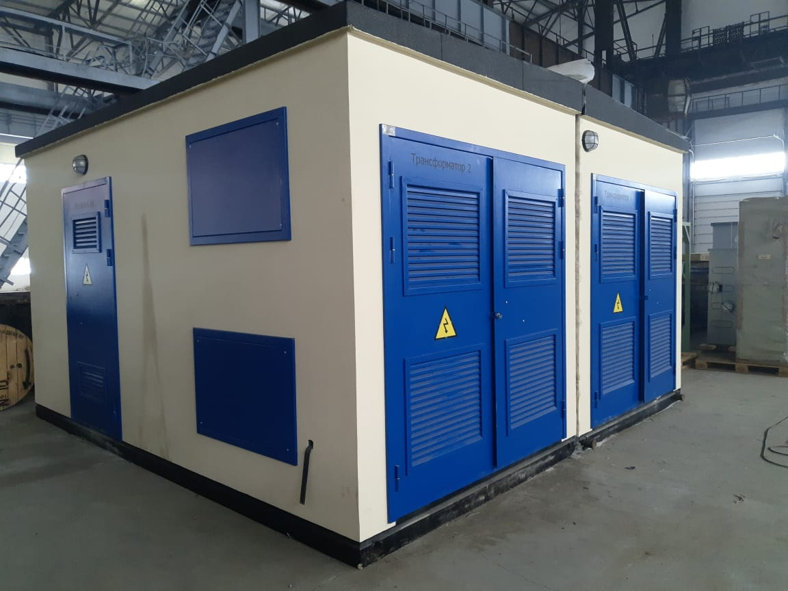
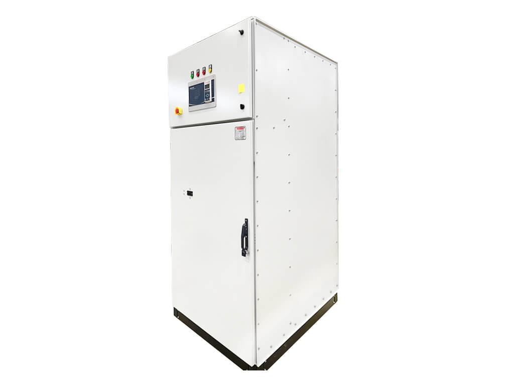
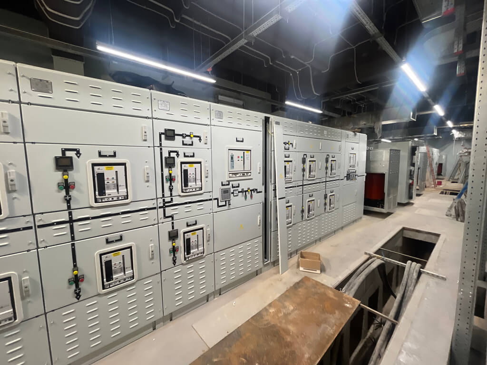
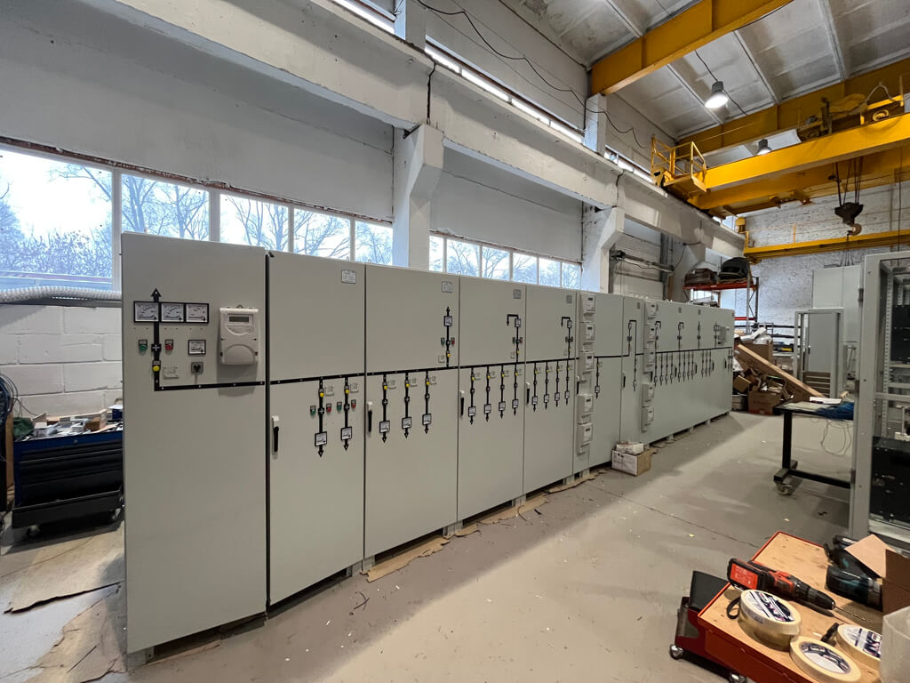

01 / Пермь · 2025
Трансформаторные подстанции 6 кВ
Изготовление и монтаж · 2 × 1600 и 2 × 2500 кВА
Оборудование и системы управления для энергосетей. От проекта до пусконаладки.
Компания объединяет производство оборудования, инженерную разработку, монтаж и обслуживание. Это позволяет вести энергопроект от технической задачи до работающей системы.
Ключевые направления производства и поставок Элатро.



Элатро берёт на себя инженерные задачи до и после поставки оборудования.
Обсудить задачуСети электроснабжения, телемеханика, диспетчеризация и расчёты.
Подстанции, системы автоматизации и силовая инфраструктура.
Обновление оборудования, регламентные работы и электротехнические проверки.
Примеры из опубликованного портфолио Элатро.

Изготовление и монтаж · 2 × 1600 и 2 × 2500 кВА

Изготовление оборудования

Изготовление и монтаж
Для обсуждения проекта свяжитесь с командой Элатро напрямую.
Написать компанииМосква, Мосфильмовская улица
Производство — Коломна